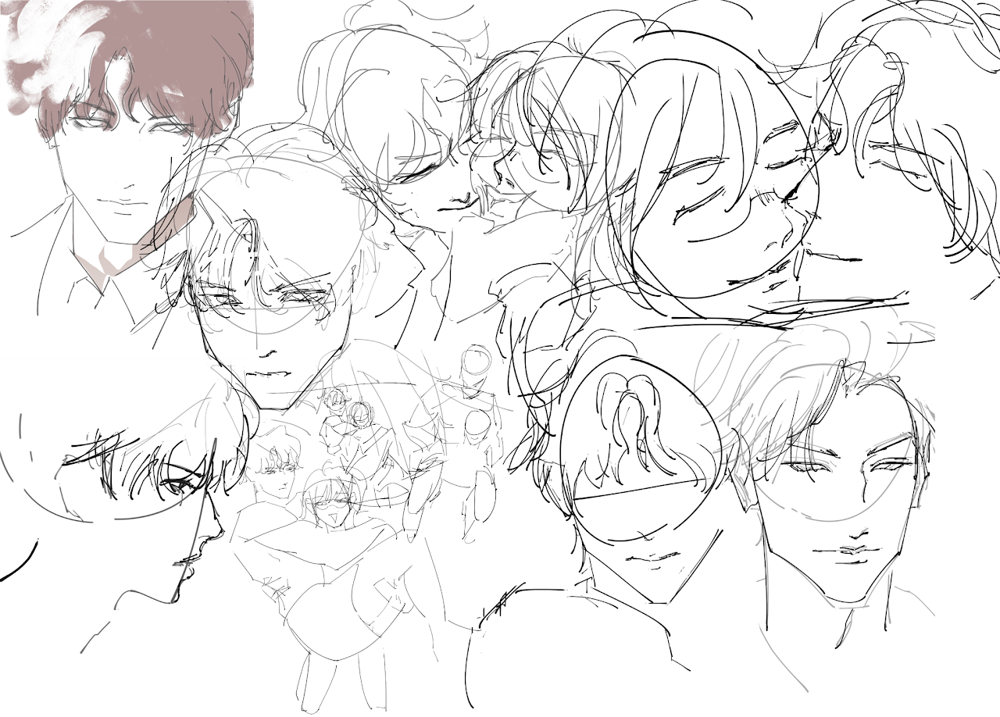

·2026/03/24: it's really interesting to make something like this·
nicole ann bagalso
013
lovely lovely day!
927

some sketches
·nic nico nicol nicolette lette leann leyn leynni lan lannie celsi eri erri errysius·
home
personal
school projects
about
Contact
<illustration instagram: lannie.ww>
<personal instagram: shortstack.ww>
<school email: nicoleann.bagalso@sjsu.edu>
<personal email: nicoleannbagalso@gmail.com>